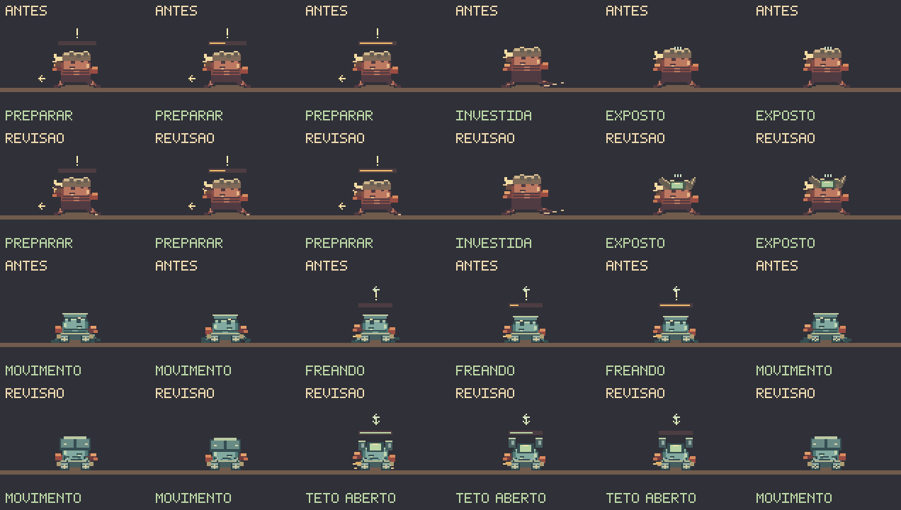
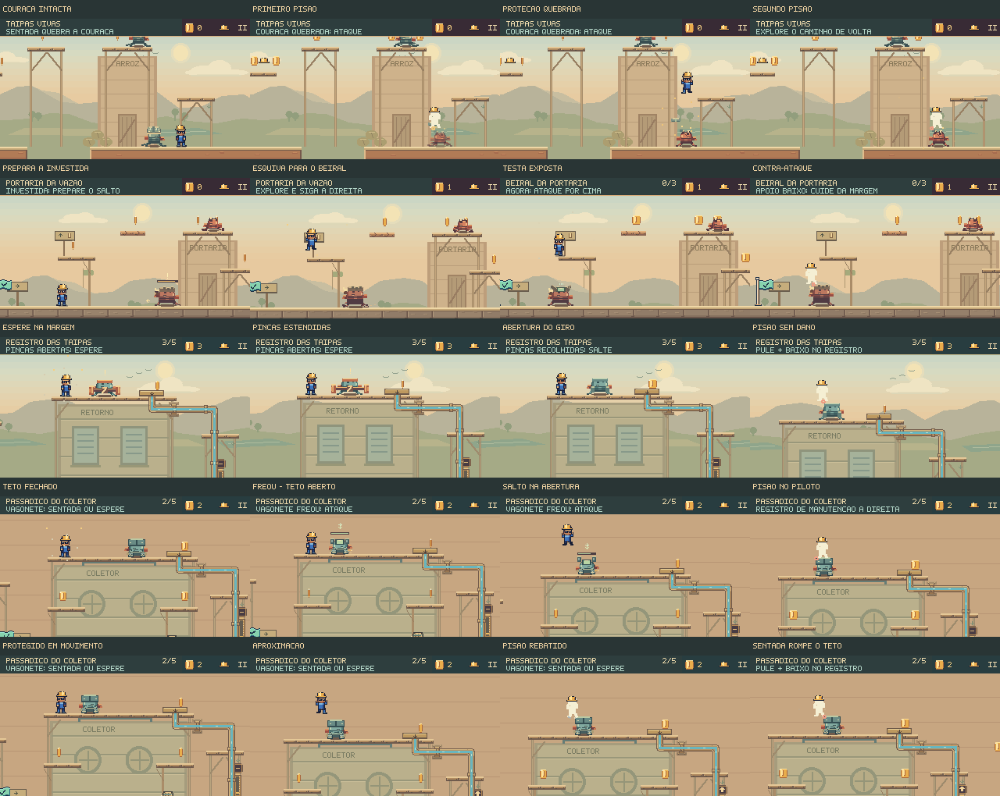

A defesa muda.
A resposta também.
O teto do vagonete abre na freada. O investidor expõe a testa depois da corrida. Novas poses e avisos tornam essas oportunidades visíveis, com cinco encontros conferidos nas plataformas reais de Guaíra.
O vagonete exige observar a freada
Enquanto roda, o teto rebate um pisão comum. Nas pontas, as placas se afastam e expõem o piloto por 550 ms. O sinal verde mostra o tempo restante; a passarela tem espaço para observar antes de saltar.
A ação aparece no corpo. Chapas articuladas, pernas recolhidas, suspensão, rodas e pequenos resíduos da frenagem diferenciam a máquina de um patrulheiro andando sobre trilhos.
Abertura conserva o risco. A lateral continua perigosa. O alvo é o piloto exposto por cima; a freada não torna todo o inimigo inofensivo.
A sentada oferece uma resposta mais agressiva
O primeiro pisão bate na proteção e devolve Feka ao ar. A sentada seguinte rompe o teto enquanto o vagonete ainda está andando. As duas respostas usam o combate e a movimentação do jogo.
Aproveitar o beiral depois da investida
O investidor se abaixa em três poses antes de correr. Na recuperação, as placas se abrem e deixam a testa exposta. O beiral existente permite esquivar e descer sobre ele; jogador, inimigo e aterrissagem permanecem visíveis.
Corrigida a leitura em alturas diferentes. Antes, subir ao beiral fazia o aviso abandonar o investidor vulnerável logo abaixo. Agora essa oportunidade continua indicada enquanto o alvo está próximo e visível. O mesmo vale para a quicada após quebrar uma couraça.
Defesas diferentes nas outras plataformas
Couraça: aproveitar a primeira quicada
O primeiro pisão solta a armadura. A própria quicada dá altura para o segundo, antes que a patrulha retome o movimento.
Mexedor: esperar o giro recolher
A borda firme do Registro das Taipas permite observar as pinças. Quando se recolhem, o pisão abre acesso ao registro que controla a descarga.
Os cinco vídeos começam em checkpoints carregados normalmente em saves de teste. Depois disso, somente comandos de entrada: sem editar posição, vida, inimigos ou relógios. Simulação a 60 Hz, vídeo a 30 fps, ampliação sem suavização e sem áudio.
O estado do combate no próprio sprite


Conferência da integração
3.699 testes TypeScript aprovados, zero falhas e um caso opcional ignorado; mais três testes JavaScript aprovados. Os 19 casos novos conferem defesas, contra-ataques, enquadramento, poses e pausa. Validadores, tipos e build passaram. O navegador repetiu os cinco encontros com teclado e gamepad simulado, conferiu quatro pausas e completou nove percursos da campanha normal, incluindo as oito cenas e os dois chefes.
Resultados desta rodada · Contatos e enquadramento · Encontros no navegador · Campanha completa
O gamepad foi simulado em navegador de desktop. As provas verificam respostas executáveis, dano e regressões; a dificuldade de descoberta e a diversão para jogadores novos precisam de avaliação em primeiras partidas.